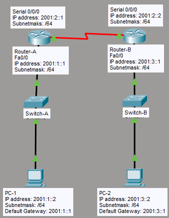

What I Learned
IPv6 was one of those topics that felt intimidating at first — the addresses look nothing like IPv4. But once I understood the notation rules and address types, it clicked. The biggest shift in thinking: IPv6 wasn't just designed to solve the address exhaustion problem, it was redesigned to fix the fundamental limitations of IPv4 from the ground up.
Configuring static routing with IPv6 on Cisco IOS was surprisingly similar to IPv4, just with a different command syntax. Seeing the routes populate with show ipv6 route made the whole thing feel real.
What is IPv6?
IPv6 (Internet Protocol version 6) is the successor to IPv4. The working standard was published by the Internet Engineering Task Force (IETF) in 1998. Key milestones:
- 1997 — IBM became the first commercial vendor to support IPv6 through AIX 4.3
- 1998 — IETF published the official IPv6 standard
- 2004 — Japan and Korea acknowledged as having the first public IPv6 deployments
Address Space Comparison
| Protocol | Address Size | Total Addresses |
|---|---|---|
| IPv4 | 32-bit | ~4.3 billion |
| IPv6 | 128-bit | 340 undecillion (3.4 × 10³⁸) |
340,282,366,920,938,463,463,374,607,431,768,211,456
IPv6 Advantages
IPv6 wasn't just a bigger address space — it was a complete redesign. Here's what it brings to the table:
Large Address Space
128-bit addressing provides a virtually unlimited pool of globally unique addresses.
Global Reachability
Every device gets a globally reachable address — access computers from anywhere without NAT.
Aggregation
Hierarchical addressing enables efficient route summarization, reducing routing table sizes.
Stateless Auto-Configuration
Devices can configure their own IPv6 address without DHCP — true plug and play.
Multi-homing
A single PC can maintain multiple simultaneous internet connections from different ISPs.
IPSec Native
IPSec is mandatory in IPv6 — encryption and authentication are built into the protocol.
Mobile IP
Like SIM roaming — the same IP address can be used across different physical locations.
No Broadcast
IPv6 eliminates Layer 3 broadcast. No ARP either — replaced by NDP (Neighbor Discovery Protocol).
Migration Tools
IPv4 and IPv6 are not directly compatible, so migration requires one of these three approaches:
| Tool | How It Works | Use Case |
|---|---|---|
| Dual Stack | Device runs both IPv4 and IPv6 simultaneously | Most common — gradual migration |
| Tunneling | IPv6 packets encapsulated inside IPv4 packets | Connecting IPv6 islands over IPv4 infrastructure |
| NAT-PT | Translates IPv6 addresses to IPv4 and vice versa | Legacy IPv4-only systems communicating with IPv6 |
Address Notation
IPv6 addresses are 128-bit, written as 8 groups of 4 hexadecimal digits separated by colons. Two rules let you shorten them:
Compression Rules
- Rule 1 — Leading zeros: Drop leading zeros in any group.
0000→0,013F→13F - Rule 2 — Double colon: Replace one consecutive sequence of all-zero groups with
::. Can only be used once per address.
Compression Examples
| Full Address | Step 1 (drop leading zeros) | Step 2 (use ::) |
|---|---|---|
2031:0000:0000:013F:0000:0000:0000:0001 |
2031:0:0:13F:0:0:0:1 |
2031:0:0:13F::1 |
1080:0000:0000:0000:0000:0034:0000:417A |
1080:0:0:0:0:34:0:417A |
1080::34:0:417A |
:: shorthand can only appear once in an address. Using it twice makes the address ambiguous — the router can't determine how many zero groups each :: represents.
IPv6 Address Types
Unlike IPv4, IPv6 has no broadcast addresses. Traffic is handled through three address types:
| Type | Range / Prefix | IPv4 Equivalent | Description |
|---|---|---|---|
| Global Unicast | 2000::/3 |
Public IP | Globally routable addresses assigned by ISPs |
| Unique Local | FD00::/8 |
Private IP (RFC 1918) | Private addressing for internal networks, not routed on internet |
| Link Local | FE80::/10 |
APIPA (169.254.x.x) | Auto-generated on every interface, used for local link communication only |
| Loopback | ::1/128 |
127.0.0.1 | Used to test the local IPv6 stack |
| Unspecified | ::/128 |
0.0.0.0 | Shown when a host has no usable IPv6 address yet |
| Multicast | FF00::/8 |
224.0.0.0/4 | One-to-many; replaces broadcast in IPv6 |
| Tunneling | 2002::/16 |
— | Reserved for 6to4 tunneling (IPv6 over IPv4) |
My Lab Topology
One switch connecting multiple computers across three VLANs. Different port ranges assigned to different VLANs for department segmentation.

Download my Packet Tracer lab:
Download Lab FileStatic Routing Lab
I configured IPv6 static routing between two routers (RA and RB), each with a FastEthernet and a Serial interface. The goal: PC on the RA side should reach PC on the RB side using IPv6.
Lab Topology
| Device | Interface | IPv6 Address | Network |
|---|---|---|---|
| Router A (RA) | Fa0 | 2001:1::1/64 |
2001:1::/64 |
| Router A (RA) | S0 | 2001:2::1/64 |
2001:2::/64 (link) |
| Router B (RB) | S0 | 2001:2::2/64 |
2001:2::/64 (link) |
| Router B (RB) | Fa0 | 2001:3::1/64 |
2001:3::/64 |
Router A Configuration
enable
config t
! Configure FastEthernet interface (LAN side)
interface fa0
ipv6 address 2001:1::1/64
no shutdown
! Configure Serial interface (WAN link to RB)
interface s0
ipv6 address 2001:2::1/64
no shutdown
exit
! Enable IPv6 routing (disabled by default on Cisco IOS)
ipv6 unicast-routing
! Static route to RB's LAN — via RB's serial IP
ipv6 route 2001:3::/64 2001:2::2Router B Configuration
enable
config t
! Configure FastEthernet interface (LAN side)
interface fa0
ipv6 address 2001:3::1/64
no shutdown
! Configure Serial interface (WAN link to RA)
interface s0
ipv6 address 2001:2::2/64
no shutdown
exit
! Enable IPv6 routing
ipv6 unicast-routing
! Static route to RA's LAN — via RA's serial IP
ipv6 route 2001:1::/64 2001:2::1Verification Commands
! Check all IPv6 interfaces and their addresses
show ipv6 interface brief
! View the IPv6 routing table
show ipv6 routeipv6 unicast-routing must be enabled on every router. Without it, the router will not forward IPv6 packets between interfaces even if addresses are correctly configured.
show ipv6 interface briefshowed all interfaces as Up/Up with correct addressesshow ipv6 routeshowed static routes marked with S in the routing table- Ping from PC on RA's LAN to PC on RB's LAN: Success ✓
Key Takeaways
What I Understood
- IPv6 uses 128-bit addresses — vastly larger than IPv4's 32-bit space
- Use
::to compress consecutive zero groups — but only once per address - Link-local addresses (
FE80::/10) are auto-generated on every interface - IPv6 has no broadcast — multicast and anycast replace it
- NDP (Neighbor Discovery Protocol) replaces ARP in IPv6
ipv6 unicast-routingmust be enabled before any IPv6 routing works on Cisco IOS- IPSec is mandatory in IPv6 — security is baked into the protocol, not bolted on
- IPv4 and IPv6 are not compatible — use Dual Stack, Tunneling, or NAT-PT to migrate